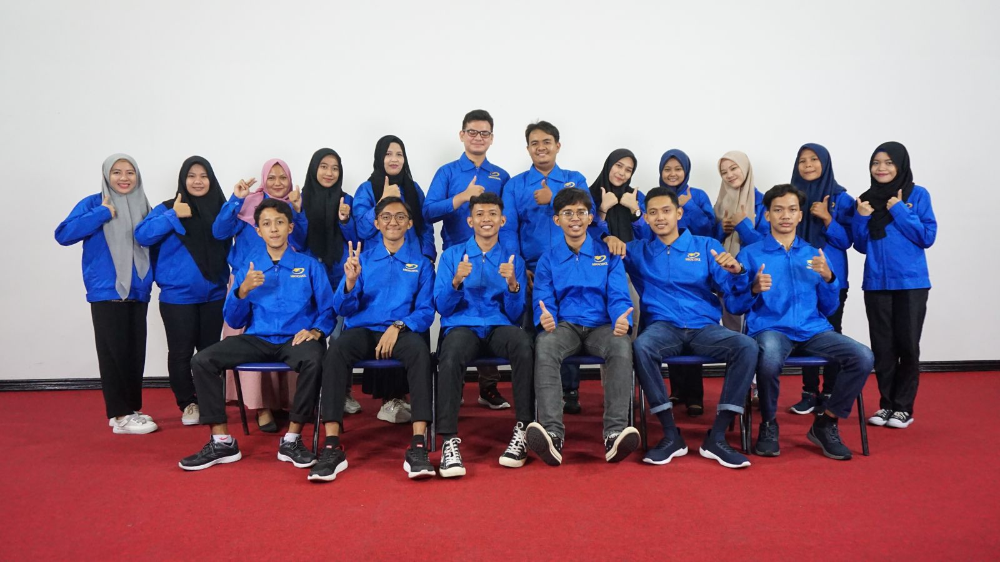

keluarga Mahasiswa Islam (KMI)
Keluarga Mahasiswa Islam merupakan salah satu unit kemahasiswaan di lingkungan Universitas Mikroskil dalam menjalankan kegiatan-kegiatan keislaman bertujuan sebagai wadah pembinaan bagi mahasiswa muslim Universitas Mikroskil yang ingin berorganisasi, menimba ilmu agama Islam, menambah wawasan serta pengalaman.
Visi
Mewujudkan mahasiswa Islam yang beriman, tangguh, istiqamah dalam gerakan yang kontributif dan inspiratif.
Misi
Meningkatkan ukhuwah islamiyah sesama civitas kampus Universitas Mikroskil Mensyi’arkan islam dengan cinta dan hikmah di lingkungan Universitas Mikroskil Syi’ar kreatif dan inspiratif melalui aksi dan pemanfaatan media cetak maupun elektronik.
Jadwal Kegiatan
Mingguan
Tahsin
Kegiatan belajar bersama untuk mengetahui cara membaca Al-Qur’an yang Baik dan Benar
Waktu : Ikhwan (Setiap hari Senin)
Halaqah
Pengajian rutin mingguan dalam format kelompok kecil antar 5 s/d 10 orang yang duduk melingkar bersama mempelajari dan mendalami ajaran Islam.
Ikhwan : Setiap hari Jum’at
Akhwat : Setiap hari Sabtu
Waktu : Ba’da Dzhuhur (14.00 WIB s/d Selesai)
Lokasi : Musholla Gedung A lt.4 Universitas Mikroskil
Bulanan
KANTIN ( Kajian Rutin ) KMI
Pengajian umum untuk mahasiswa muslim civitas kampus Universitas Mikroskil bersifat tematik yang membahas ilmu pengetahuan dan keseharian menurut tuntunan agama Islam.
Waktu : Hari Sabtu di minggu ke-2 atau ke-3 Tiap Bulan
Lokasi : Diberitahu 1 minggu sebelum Kajian.
NB : Waktu dan lokasi dapat berubah sewaktu-waktu.
Contact Person:
Dhean (085373337057)
Ardi Saputra (082274022132)
Official Social Media:
 @kmi_mikroskil
@kmi_mikroskil
 ukmkmi25@gmail.com
ukmkmi25@gmail.com
 Universitas Mikroskil
Universitas Mikroskil Universitas Mikroskil
Universitas Mikroskil